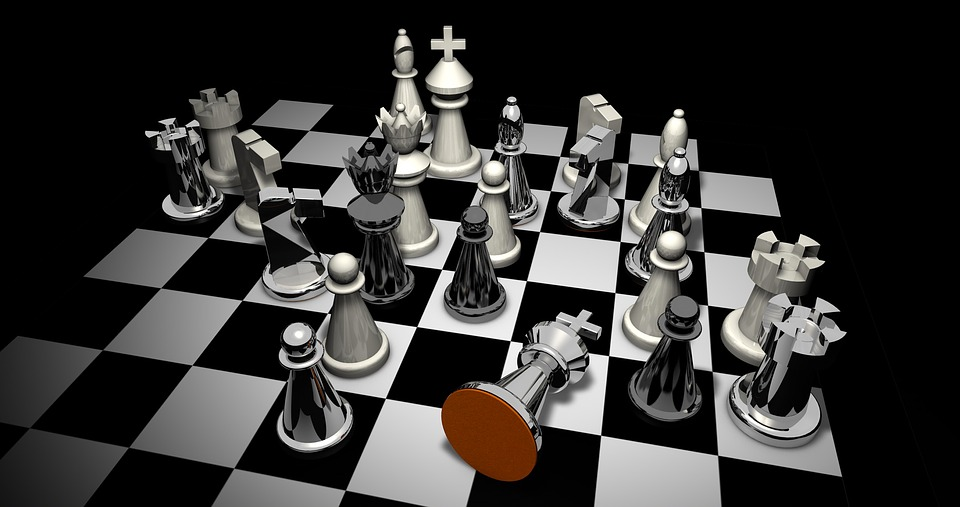

Mega multiplayer festival gamer
Mandolfo vs Kolisch, 1859 0-1
Shumov vs Kolisch, 1862 0-1
Kolisch vs Anderssen, 1861 1-0
Duke Karl / Count Casabianca vs Kolisch, 1859 0-1
Kolisch vs Loyd, 1867 1-0
Kolisch vs Anderssen, 1861 1-0
Kolisch vs Geake, 1860 1-0
F Deacon vs Kolisch, 1860 0-1
Kolisch vs R Steel, 1861 1-0
Kolisch vs Gastein, 1859 1-0
# of games in database: 842,056
Years covered: 1475 to 2017 (543 years)
White wins 317,158 games (37.66%)
Black wins 235,098 games (27.92%)
289,787 games are drawn (34.41%)
Average # of moves per game: 40.64
Average Elo rating of rated players: 2192
# of games with annotation: 2,266 (0.27%)
# of games with kibitzing: 135,239 (16.06%)
# of kibitzes in total: 3,994,666
# of registered users: 237,356
# of users registered in last 30 days: 3,629 (1.53%)
# of registered users seen in last 90 days: 9,694 (4.08%)
